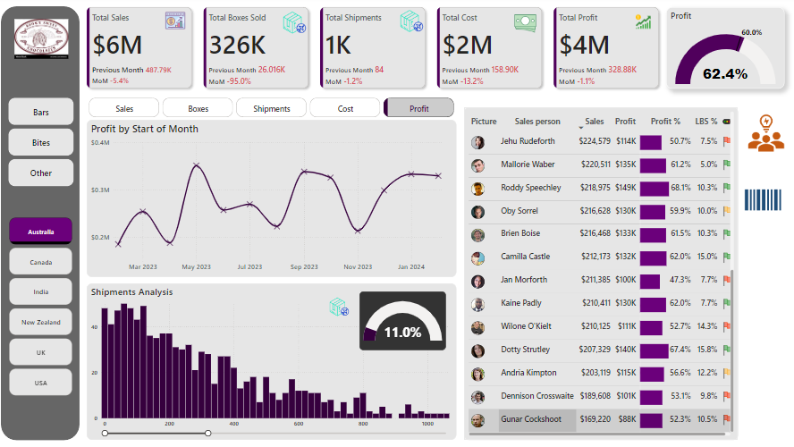
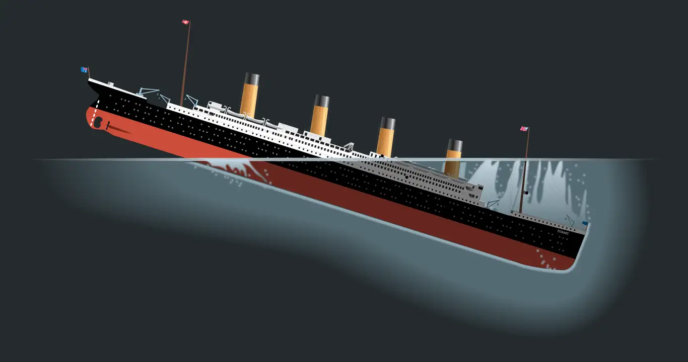
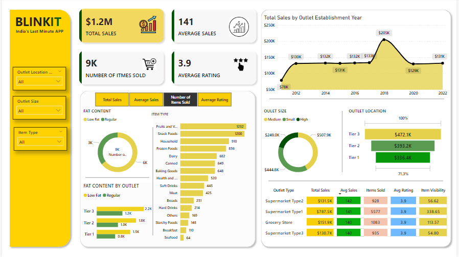

The Washington Post collected data on more than 52,000 criminal homicides over the past decade in 50 of the largest American cities. In this project, we will dive into the world of analyzing Homicides data using Python to uncover interesting insights and answer essential questions.
Connect to a SQL Database using Python and onducted an exploratory data analysis using SQL to gain insights into the Famous paintings and their artists information. This analysis provided valuable understanding of the dataset and helped identify key trends and patterns.

Performed Sales Analysis of a chocolate shop in Power BI to identify Trends and Patterns. Calculated Year over Year sales and Month over Month sales Analysis with the help of DAX formulars. Analysed sales department and who met their monthly targets and identify top products with highest sales.
The Sakila database is a nicely normalised schema modelling a DVD rental store, featuring things like films, actors, film-actor relationships, and a central inventory table that connects films, stores, and rentals. This analysis helped identify key trends and patterns in their data.

Cleaned and transformed data from two databases comprising eight tables by handling missing and empty values, resolving name inconsistencies, correcting datatypes to ensure accuracy and consistency for subsequent Analysis.

This project involved measuring the survival rate of passengers in Titanic data using Power BI. I used Power Query to clean the data and DAX formulars to create measures used in KPI`s. Through this project we understood passengers onboard in the titanic ship

Conducted a comprehensive analysis of Blinkit Sales to identify Sales Trend and understand Customer behavior. This project aimed to measure customer satisfaction and sentiment, providing insights into how well the company meets customer needs and identifying opportunities for service improvement.